A Sandbox With A DirectionUne sandbox avec un cap
For this project there is no specific goal or conclusion: it should be seen as a sandbox to practice my skills and learning. But if there were to be an objective, I am aiming for a video game in a survival-zombie genre (probably), and all my work revolves around this theme. The practices present in the project so far: Ce projet n'a ni but ni conclusion précis : il faut le voir comme une sandbox pour pratiquer mes compétences et ce que j'apprends. Mais s'il fallait un objectif, je vise un jeu vidéo de type survival-zombie (probablement), et tout mon travail tourne autour de ce thème. Les pratiques présentes dans le projet jusqu'ici :
SystemsSystèmes
Each system runs in realtime and is built to make the environment variable: no two visits to the school look exactly the same. Chaque système tourne en temps réel et sert à rendre l'environnement variable : deux visites de l'école ne se ressemblent jamais tout à fait.
Randomized CeilingsPlafonds aléatoires
Ceiling tiles are placed, rotated and dropped procedurally: intact, hanging or fallen. One click regenerates the whole ceiling state of the corridor. Les dalles de plafond sont placées, tournées et lâchées de façon procédurale : intactes, pendantes ou tombées. Un clic régénère tout l'état du plafond du couloir.
Blueprint breakdownBreakdown du Blueprint
Light ToolOutil d'éclairage
The lights cast visible rays, and the tool sets each light up with or without its physics constraint, depending on whether there is a ceiling above it or not. Les lumières projettent des rayons visibles, et l'outil configure chaque lumière avec ou sans sa contrainte physique, selon qu'il y a un plafond au-dessus d'elle ou non.
Randomized LockersCasiers aléatoires
Each locker is assigned a state, open or closed, at every launch. When open, the rotation angle of the door is randomized, and so are the elements inside the locker. À chaque lancement, chaque casier reçoit un état, ouvert ou fermé. Quand il est ouvert, l'angle de rotation de sa porte est aléatoire, tout comme les éléments à l'intérieur.
Blueprint breakdown + statesBreakdown du Blueprint + états
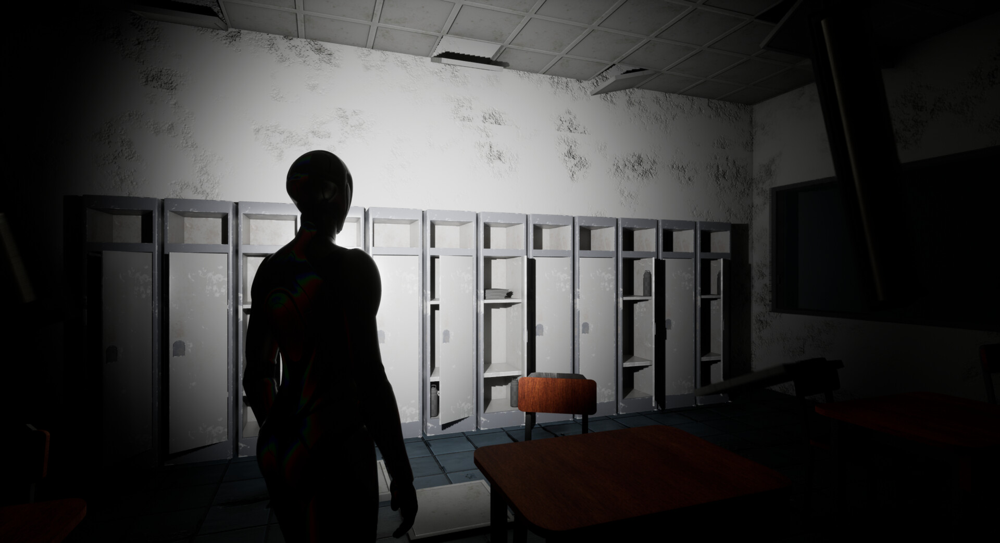
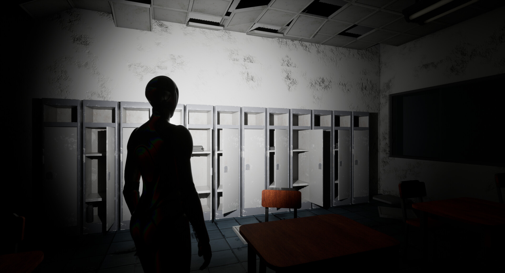
Door + Interaction WidgetPorte + widget d'interaction
A door driven by a line trace and a widget; this one was more of a personal desire. From what I have learned, I refrain from Blueprint casting in anything included in the project's build: editor-only tools can cast, but otherwise I primarily work with Blueprint Interface to communicate only the necessary information. Une porte pilotée par un line trace et un widget ; celle-ci relevait plutôt d'une envie personnelle. D'après ce que j'ai appris, j'évite les casts Blueprint dans tout ce qui entre dans le build du projet : les outils réservés à l'éditeur peuvent caster, mais sinon je travaille surtout avec des Blueprint Interfaces, pour ne communiquer que les informations nécessaires.
Blueprint breakdownBreakdown du Blueprint
Tech BreakdownBreakdown technique
The same scene through the engine's eyes: lighting isolation, Lumen, Nanite and performance passes. Click any pass to inspect it. La même scène vue par le moteur : éclairage isolé, Lumen, Nanite et passes de performance. Cliquez sur une passe pour l'examiner.
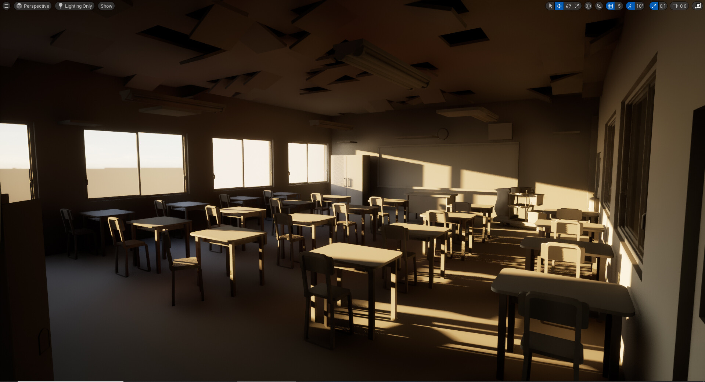
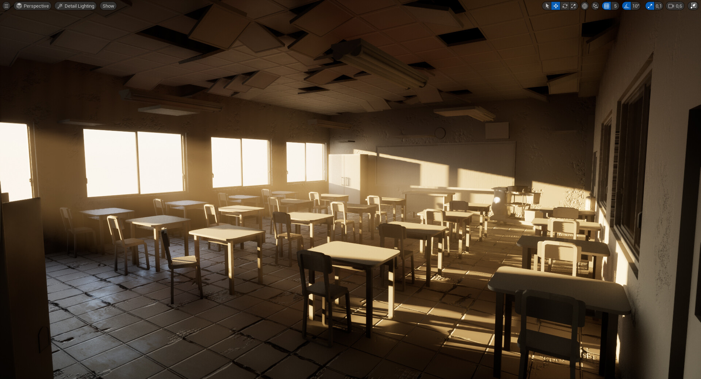
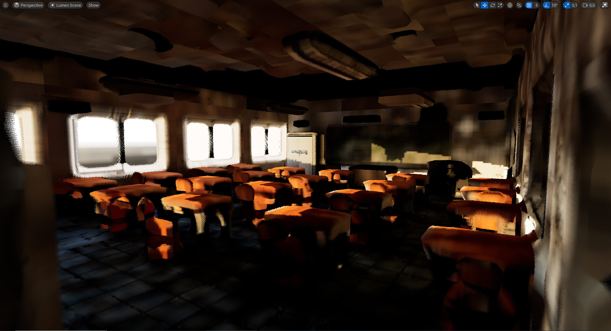
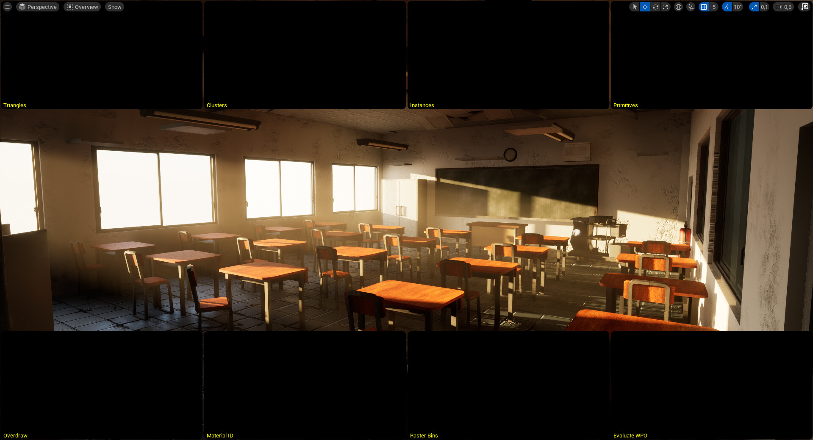
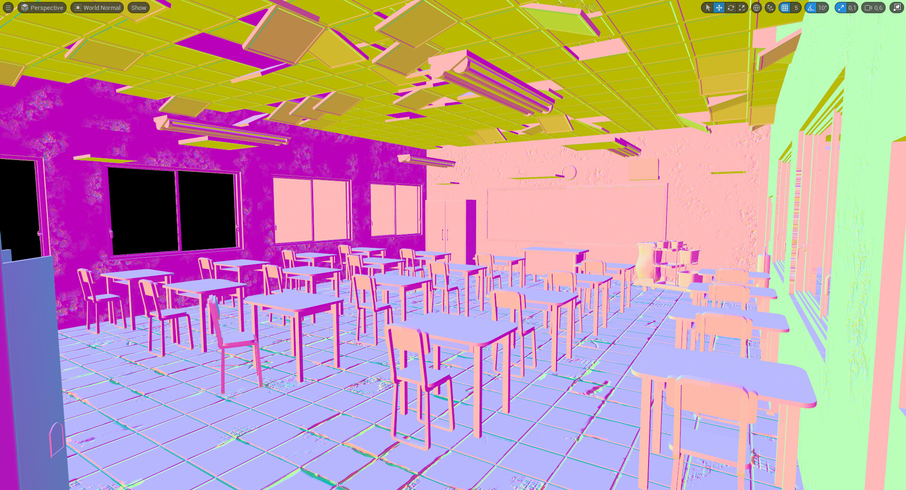
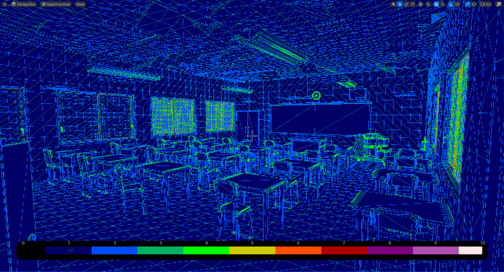
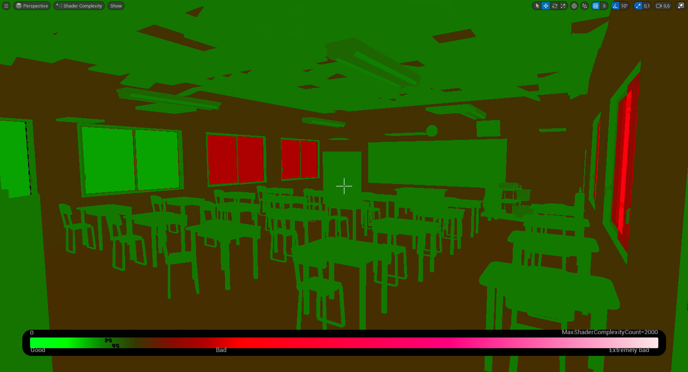
Current ChallengesDéfis actuels
I am starting to have a lot of actors in the scene, because the environment is much larger than this classroom. I am currently merging actors such as the ceiling Blueprints into a single one per building: instead of ticking 500 ceilings, I would only tick one for the same result. The Packed Level Actor is not an option from what I have tried, because it skips the functions inside, so there is no randomization. I am leaning towards creating an editor tool with Blueprint Utilities. Je commence à avoir beaucoup d'acteurs dans la scène, car l'environnement est bien plus grand que cette salle de classe. Je suis en train de fusionner des acteurs, comme les Blueprints de plafond, en un seul par bâtiment : au lieu de faire tourner le tick de 500 plafonds, je n'en aurais qu'un pour le même résultat. D'après mes essais, le Packed Level Actor n'est pas une option, car il ignore les fonctions qu'il contient, et donc toute randomisation. Je m'oriente vers un outil d'éditeur fait avec les Blueprint Utilities.
Final RendersRendus finaux
Captured in realtime in Unreal Engine 5, in the two moods the sandbox currently supports. Capturés en temps réel dans Unreal Engine 5, dans les deux ambiances que la sandbox gère actuellement.
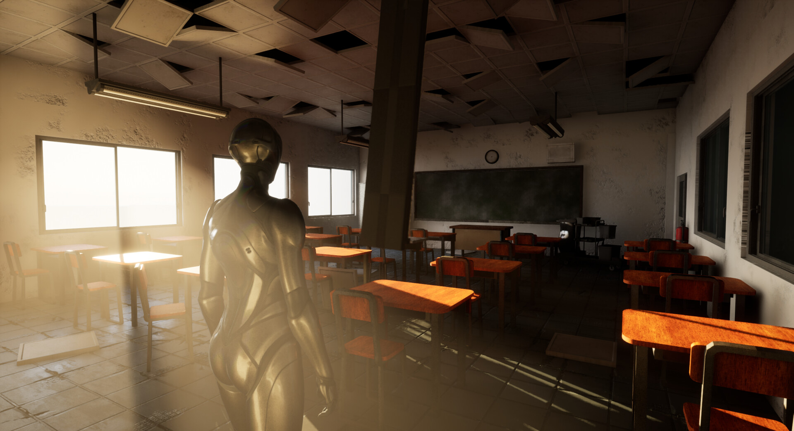
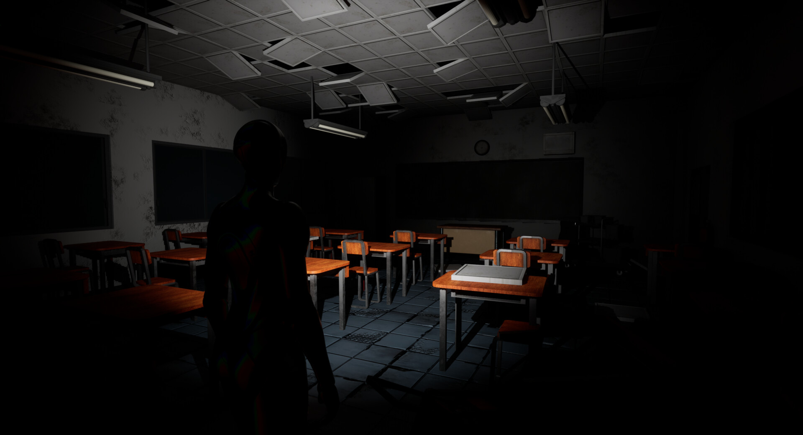
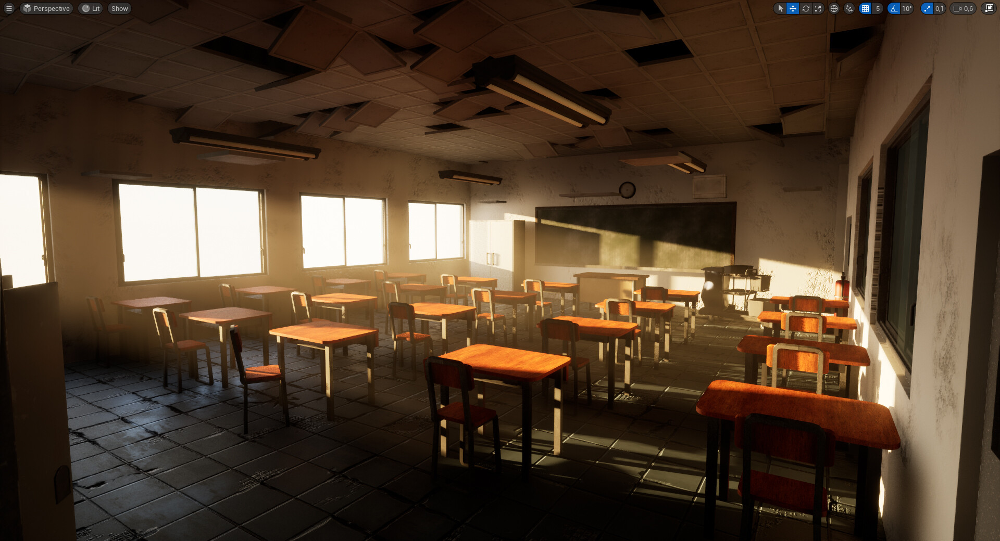